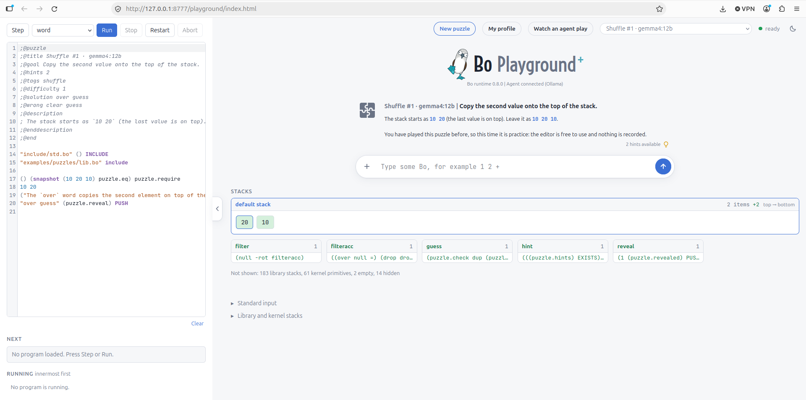

Words flow left to right
Values go on a stack. Words operate on them. Combine words by placing them next to each other.
1 2 + → 3A concatenative, purely postfix language built around one simple idea. Code and data are the same thing.
Open source · Experimental · Draft specification
; define factorial
"include/stack.bo" require
"include/io.bo" require
(
(dup 0 =) ; if n == 0
(drop 1) ; then 1
(dup 1 - ! *) ; else n * fact(n-1)
ifte
) (!) PUSH
15 ! ps
; 0: 130767436800001 / THE IDEA
Bo is an exercise in language minimalism: a small set of ideas that invites you to look at programming from another angle.
Values go on a stack. Words operate on them. Combine words by placing them next to each other.
1 2 + → 3Lists can hold values or programs. Quote a piece of code, pass it around, and choose when to run it.
(1 2 +) applyThere is no separate dictionary: words name stacks, and definitions are values on those stacks.
(2 *) (double) PUSHBo means Breeze optimized, a successor to the Breeze language. Explore the language
02 / GET YOUR HANDS ON IT
The browser playground makes Bo a little more tangible. Write a program, step through it, and watch the stacks change as you go.
Open the playgroundNo install needed. Just bring your curiosity.

Playground+ is a separate local app for agent-generated puzzles, built on the browser playground. With a local Ollama model, puzzle generation and play stay on your computer; no puzzle or play data leaves it. Learn more
03 / GO A LITTLE DEEPER
Try Bo in your browser, or build the C runtime locally. Bo also has a Python reference implementation, a WebAssembly runtime, and editor support for VS Code and JupyterLab.
git clone https://github.com/BoLanguage/bo.git
cd bo
make all
c/boRequires a C compiler, Python 3, Git, Node.js 22.13+, npm and uv. The first build installs missing project dependencies and Emscripten; downloads can be large. At the Bo prompt, try "include/std.bo" require 1 2 + ps. Exit the REPL before running the commands below.
make playground-plusAfter make all, from the cloned bo directory. For local AI puzzles, install Ollama and a tool-capable model. Setup details →